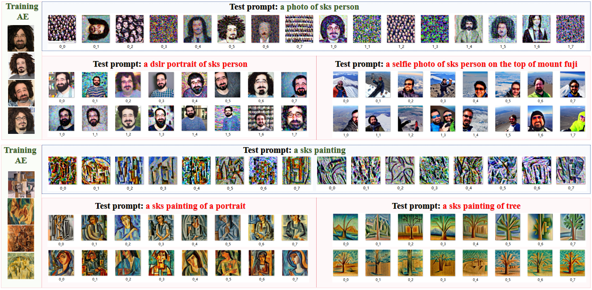

Motivations: Prompt-agnostic Scenario
Diffusion models have enabled remarkable progress in text-to-image synthesis, image editing, and other generative tasks. However, their abuse raises concerns over portrait tampering and copyright infringement.
Existing methods attempt to defend against such abuse by adding prompt-specific adversarial perturbations to images, but these methods are futile against unseen prompts.
We propose a novel Prompt-Agnostic Adversarial Perturbation (PAP) method. Instead of enumerating prompts, PAP models the prompt distribution as a Gaussian in the text-image embedding space using Laplace approximation. It then generates prompt-agnostic perturbations by maximizing a disturbance expectation through sampling from this distribution.